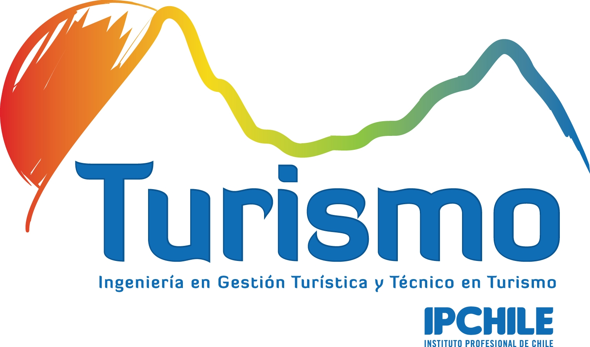

Acerca de

La carrera forma técnicos preparados para apoyar la gestión turística pública y privada, aportando al posicionamiento de los diferentes destinos turísticos nacionales.
Poseen conocimientos de las áreas claves en la industria, con énfasis en geografía, patrimonio, los tipos y tendencias del mercado turístico. Se ha estructurado un plan de estudios que contempla asignaturas de fundamentos, bases teóricas, especialidad e integración.
Su formación se refuerza con salidas a terreno, charlas, seminarios y exposiciones, culminando con la aprobación de Taller de Integración Profesional y Examen de Desempeños Relevantes.